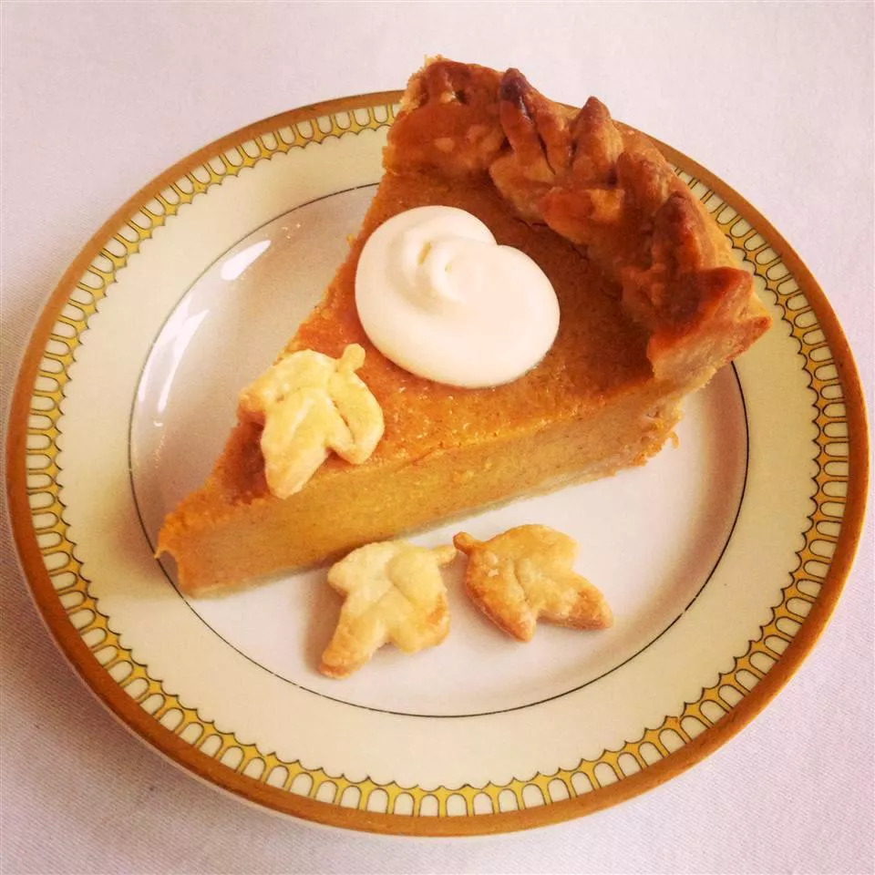

Chef John's Pumkin Pie

Description
This is Chef John's rendition of pumpkin pie that I found on All Recipes
Ingredients
- 1 (15 ounce) can pumkin puree
- 3 egg yolks
- 1 large egg
- 1 (14 ounce) can sweetened condensed milk
- 1 teaspoon ground cinnamon
- 1/2 teaspoon ground ginger
- 1/2 teaspoon fine salt
- 1/4 teaspoon freshly grated nutmeg
- 1/8 teaspoon Chinese 5-spice powder
- 1 9-inch unbaked pie crust
Directions
- Preheat oven to 425 F (220 C)
- Whisk together pumpkin, egg yolks, and egg in large bowl until smooth. Add sweetened condensed milk, cinnamon, ginger, salt, nutmeg, and Chinese 5-spice powder; whisk until thoroughly combined
- Line a 9-inch pie plate with pie crust; crimp edges
- Pour filling into crust; lightly tap on the counter to release air bubbles
- Bake for 15 minutes
- Reduce heat to 350 F (175 C) and bake until just set in the middle, 30 to 40 more minutes. A paring knife inserted into the filling, 1 inch from the edge, should come out clean. Allow to cool completely before serving